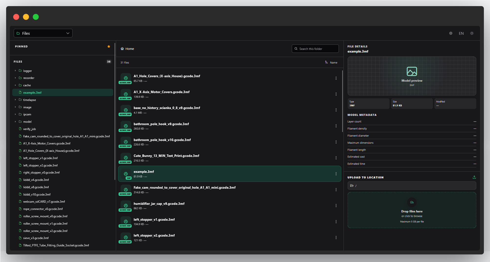
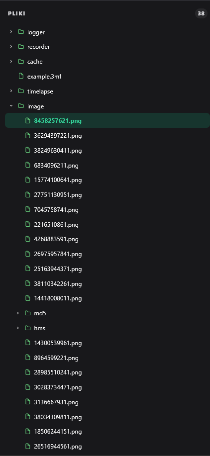
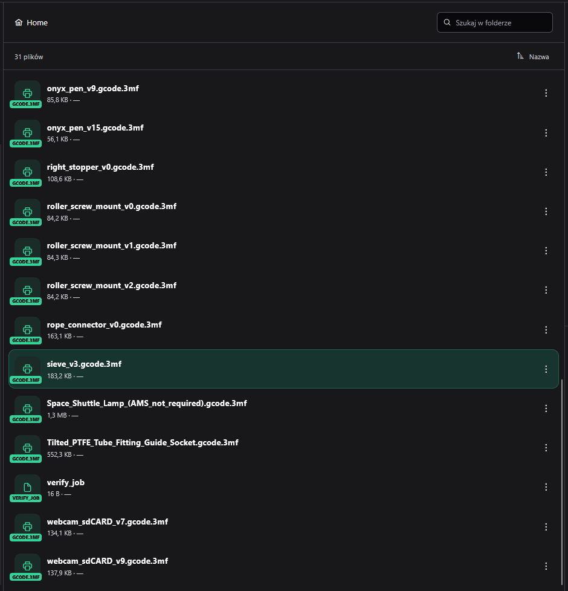
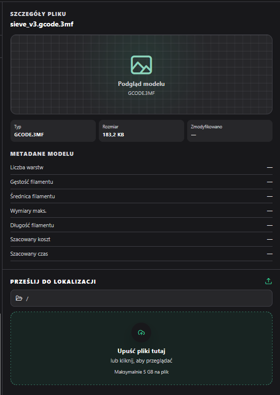

Files page
The Files page (route /files) is a file browser for the
printer's SD card. It talks to ftps-remote-manager for
every folder listing and file operation, and presents the result as a
three-panel layout: a file tree, a file list (browser), and a file
details panel — implemented in
files/files-dashboard-page.ts /
.html.
Overview

Folders load lazily — a folder's contents are only fetched from the printer when you first expand it. File actions (download, rename, move, delete) are gated by permissions and, for rename and move, show a confirmation dialog before anything happens. Uploading a file opens a destination picker, and if the upload would overwrite an existing file you get an overwrite confirmation dialog before it proceeds. Download and delete each have a 4-second client-side cooldown after you trigger them, to prevent accidental duplicate requests.
Layout, theme & language
Panel layout
The Files page has its own layout service
(core/files-dashboard-layout.service.ts,
FilesDashboardLayoutService), reachable from the same
gear/settings menu in the top bar used on the Management page — it is
only shown there while the Files dashboard is the active page. It
exposes two independent settings:
| Setting | Options | Effect |
|---|---|---|
| Browser width | Standard / Wide / Maximum | Controls how wide the file-list panel is, and therefore how many file rows are visible without scrolling |
| Details position | Right / Left | Controls which side of the screen the file details panel sits on |
A Restore original layout option resets both settings back to their defaults. Like the Management page, your choices are saved to the browser's local storage and restored on your next visit.
These are display preferences only, stored per browser — they don't affect anything on the printer or in other browsers/devices.
Light / dark mode
The moon/sun icon in the top bar toggles between light and dark theme, exactly as on the Management page: an immediate switch with no reload, and dark mode also re-colors any theme-aware thumbnails shown in the file details panel.
Language (PL / EN)
The language toggle in the top bar switches every label and button on the Files page between Polish and English immediately, with no page reload — identical behavior to the Management page.
As with the rest of the dashboard, the default language is Polish the first time you open it on a given browser (this documentation site itself defaults to English, independently of that).
File tree

The left-hand navigation panel
(files/file-tree/file-tree.ts /
.html). A Pinned section at the top
offers one-click buttons for frequently used locations — such as the
models, cache, and printer logs folders — followed by a recursive,
expandable tree of the SD card's folders and files.
Displayed information
- Pinned-locations section (models / cache / printer logs, and similar)
- Recursive folder/file tree with chevron expand/collapse icons
- Per-node loading spinner while a folder's contents are being lazy-loaded
Interactions
- Click a folder to select and expand/collapse it
- Click a file to select it
- Keyboard: left/right arrow collapses/expands the currently focused node
Customization
None beyond the shared layout options described in Layout, theme & language above — the tree itself has no settings of its own.
File list

The central browser panel
(files/file-list/file-list.ts /
.html), showing the contents of whichever folder is
currently selected.
Displayed information
- Breadcrumb path (Home + clickable path segments)
- File count for the current folder
- File rows: icon by file kind, name, size, and modified date
- Empty state when a search yields no results
Interactions
- Search box — filters the current folder's files by name
- Sort toggle — ascending/descending by name
- Breadcrumb segments — click to jump to that folder
- Kebab (⋮) menu per row — Download, Rename, Move, Delete
Delete is styled as a dangerous/destructive action in the kebab menu. Rename and Move both show a confirmation dialog before the change is applied. Download and Delete are subject to the page's 4-second cooldown described in Overview.
Customization
The panel's width — Standard, Wide, or Maximum, set from Layout, theme & language — directly affects how many file rows are visible at once without scrolling. Sort order can be toggled ascending/descending at any time.
File details

The right-hand (or left-hand, depending on your layout setting) panel
(files/file-details/file-details.ts /
.html), showing metadata for the currently selected
file and hosting the upload zone.
Displayed information
- Thumbnail, or a generic model-preview placeholder with an extension badge for non-thumbnailable files
- Basic metadata: type, size, modified date
- For 3D print files, extended metadata: layer count, filament density (g/cm³), filament diameter (mm), max print dimensions (X × Y × Z mm), filament length (m), estimated material cost, and estimated print time
- "Choose a file" empty state when nothing is selected
- Optional status message area for upload/operation feedback
Interactions
- Embedded upload zone — drag-and-drop a file, or click to browse for one
- Uploading opens a destination picker dialog
- An overwrite confirmation dialog appears if the upload would replace an existing file
Customization
Which side of the screen this panel appears on — Right or Left — is configurable via Layout, theme & language above.
Strona plików
Strona plików (trasa /files) to przeglądarka plików na
karcie SD drukarki. Komunikuje się z ftps-remote-manager
w zakresie każdego listowania folderów i operacji na plikach, a
wynik prezentuje w układzie trzech paneli: drzewa plików, listy
plików (przeglądarki) oraz panelu szczegółów pliku — zaimplementowane
w files/files-dashboard-page.ts /
.html.
Przegląd
Foldery są ładowane leniwie — zawartość folderu jest pobierana z drukarki dopiero przy pierwszym rozwinięciu. Akcje na plikach (pobieranie, zmiana nazwy, przenoszenie, usuwanie) są ograniczone uprawnieniami, a dla zmiany nazwy i przenoszenia wyświetlane jest okno potwierdzenia, zanim cokolwiek się wydarzy. Przesyłanie pliku otwiera okno wyboru miejsca docelowego, a jeśli przesłanie nadpisałoby istniejący plik, pojawia się okno potwierdzenia nadpisania. Pobieranie i usuwanie mają 4-sekundowy czas odnowienia po stronie przeglądarki po ich wywołaniu, aby zapobiec przypadkowym powtórnym żądaniom.
Układ, motyw i język
Układ paneli
Strona plików ma własną usługę układu
(core/files-dashboard-layout.service.ts,
FilesDashboardLayoutService), dostępną z tego samego
menu ustawień (ikona koła zębatego) w górnym pasku co na panelu
zarządzania — jest ona widoczna tylko wtedy, gdy aktywną stroną jest
strona plików. Udostępnia dwa niezależne ustawienia:
| Ustawienie | Opcje | Efekt |
|---|---|---|
| Szerokość przeglądarki | Standardowa / Szeroka / Maksymalna | Określa szerokość panelu listy plików, a tym samym liczbę wierszy widocznych bez przewijania |
| Pozycja szczegółów | Prawa / Lewa | Określa, po której stronie ekranu znajduje się panel szczegółów pliku |
Opcja Przywróć domyślny układ resetuje oba ustawienia do wartości domyślnych. Podobnie jak na panelu zarządzania, wybór jest zapisywany lokalnie w przeglądarce i przywracany przy kolejnej wizycie.
Są to wyłącznie preferencje wyświetlania zapisywane per przeglądarka — nie wpływają na nic na samej drukarce ani na innych przeglądarkach/urządzeniach.
Tryb jasny / ciemny
Ikona księżyca/słońca w górnym pasku przełącza między motywem jasnym a ciemnym, dokładnie tak jak na panelu zarządzania: przełączenie jest natychmiastowe, bez przeładowania strony, a tryb ciemny zmienia kolorystykę także wszelkich miniatur wrażliwych na motyw wyświetlanych w panelu szczegółów pliku.
Język (PL / EN)
Przełącznik języka w górnym pasku zmienia natychmiast wszystkie etykiety i przyciski na stronie plików między polskim a angielskim, bez przeładowania strony — zachowanie identyczne jak na panelu zarządzania.
Podobnie jak w całym dashboardzie, domyślnym językiem jest polski przy pierwszym otwarciu w danej przeglądarce (ta strona dokumentacji domyślnie ustawia angielski, niezależnie od tego).
Drzewo plików
Lewy panel nawigacji
(files/file-tree/file-tree.ts /
.html). Sekcja Przypięte u góry oferuje
przyciski jednym kliknięciem do często używanych lokalizacji — takich
jak foldery modeli, pamięci podręcznej i logów drukarki — a poniżej
znajduje się rekursywne, rozwijane drzewo folderów i plików karty SD.
Wyświetlane informacje
- Sekcja przypiętych lokalizacji (modele / pamięć podręczna / logi drukarki i podobne)
- Rekursywne drzewo folderów/plików z ikonami rozwijania/zwijania (chevron)
- Wskaźnik ładowania przy węźle podczas leniwego wczytywania zawartości folderu
Interakcje
- Kliknięcie folderu zaznacza go i rozwija/zwija
- Kliknięcie pliku zaznacza go
- Klawiatura: strzałka w lewo/prawo zwija/rozwija aktualnie zaznaczony węzeł
Dostosowanie
Brak poza wspólnymi opcjami układu opisanymi w sekcji Układ, motyw i język powyżej — samo drzewo nie ma własnych ustawień.
Lista plików
Środkowy panel przeglądarki
(files/file-list/file-list.ts /
.html), pokazujący zawartość aktualnie wybranego
folderu.
Wyświetlane informacje
- Ścieżka okruszkowa (Home + klikalne segmenty ścieżki)
- Liczba plików w bieżącym folderze
- Wiersze plików: ikona według rodzaju pliku, nazwa, rozmiar i data modyfikacji
- Stan pustego wyniku, gdy wyszukiwanie nie zwróci żadnych plików
Interakcje
- Pole wyszukiwania — filtruje pliki bieżącego folderu po nazwie
- Przełącznik sortowania — rosnąco/malejąco według nazwy
- Segmenty ścieżki okruszkowej — kliknięcie przenosi do danego folderu
- Menu kebab (⋮) przy każdym wierszu — Pobierz, Zmień nazwę, Przenieś, Usuń
Usuń jest stylizowane jako akcja niebezpieczna/destrukcyjna w menu kebab. Zmiana nazwy i przenoszenie wyświetlają okno potwierdzenia przed wprowadzeniem zmiany. Pobieranie i usuwanie podlegają 4-sekundowemu czasowi odnowienia opisanemu w sekcji Przegląd.
Dostosowanie
Szerokość panelu — Standardowa, Szeroka lub Maksymalna, ustawiana w sekcji Układ, motyw i język — bezpośrednio wpływa na liczbę wierszy plików widocznych jednocześnie bez przewijania. Kolejność sortowania można przełączać rosnąco/malejąco w dowolnym momencie.
Szczegóły pliku
Prawy (lub lewy, w zależności od ustawienia układu) panel
(files/file-details/file-details.ts /
.html), pokazujący metadane aktualnie wybranego pliku
i zawierający strefę przesyłania plików.
Wyświetlane informacje
- Miniatura lub ogólny placeholder podglądu modelu z odznaką rozszerzenia dla plików bez miniatury
- Podstawowe metadane: typ, rozmiar, data modyfikacji
- Dla plików wydruku 3D — rozszerzone metadane: liczba warstw, gęstość filamentu (g/cm³), średnica filamentu (mm), maksymalne wymiary wydruku (X × Y × Z mm), długość filamentu (m), szacowany koszt materiału oraz szacowany czas druku
- Stan pusty „wybierz plik”, gdy nic nie jest zaznaczone
- Opcjonalny obszar komunikatów statusu dla przesyłania/operacji
Interakcje
- Wbudowana strefa przesyłania — przeciągnij i upuść plik lub kliknij, aby go wybrać
- Przesyłanie otwiera okno wyboru miejsca docelowego
- Okno potwierdzenia nadpisania pojawia się, gdy przesłanie zastąpiłoby istniejący plik
Dostosowanie
Po której stronie ekranu znajduje się ten panel — po prawej czy po lewej — można skonfigurować w sekcji Układ, motyw i język powyżej.